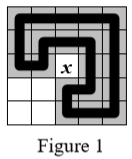
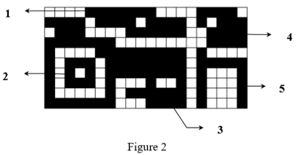

Black and white pictures are usually stored as bitmaps. A bitmap is a rectangular grid of pixels.
A polyline between pixels $P$ and $Q$ is a sequence of black pixels $P=P_1, P_2, …, P_k=Q$, where $P_i$ and $P_{i+1} ( i=1, …, k-1)$ are (vertically or horizontally) adjacent pixels. A polyline $P_1, P_2, ..., P_k$ is closed if $P_1=P_k$, and $P_i≠P_j (i=1, …, k-1, j=2, …, k)$ for $i<j$ unless $i=1$ and $j=k$ (that is the polyline does not contain the same pixel twice).
A set of black pixels $S$ is connected if for each pair of pixels $(P,Q)$ in $S$ there is at least one polyline $L$ between $P$ and $Q$ with all pixels of $L$ belonging to $S$.
A component of a bitmap is a maximal connected set of black pixels. A component may enclose holes. A hole consists of white pixels that are inside a closed polyline. A compact component encloses no holes.
Note that in Figure 1 the white pixel in the middle, marked with $x$, is not inside the highlighted closed polyline.


Figure 2 shows a bitmap with five components, of which two are compact ones.
You are to write a program that computes the total number of components and the number of compact components of a given coded bitmap.
Encoding. The bitmaps under investigation are coded (compressed) with the following method. Each row is coded with a sequence of integers $W_1, B_1, ..., W_k, B_k$, where $W_i$ is the number of consecutive white pixels, and Bi is the number of consecutive black pixels, respectively.
For example, the code of the first line of the bitmap in Figure 2 is the sequence 4 7 4 4 1 0. Components 4 and 5 are compact, while components 1, 2 and 3 are not compact.
 Comet OJ
Comet OJ